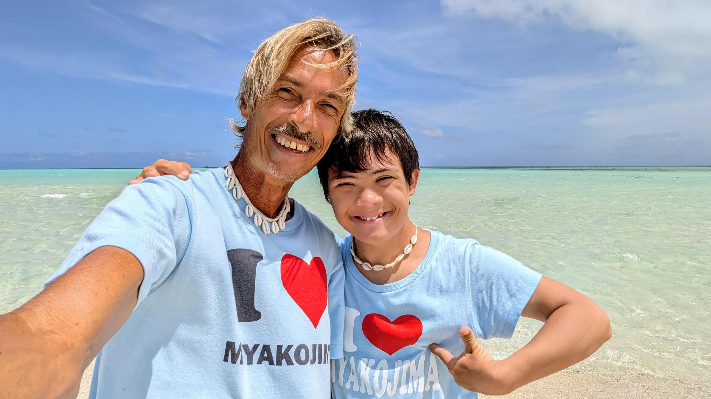
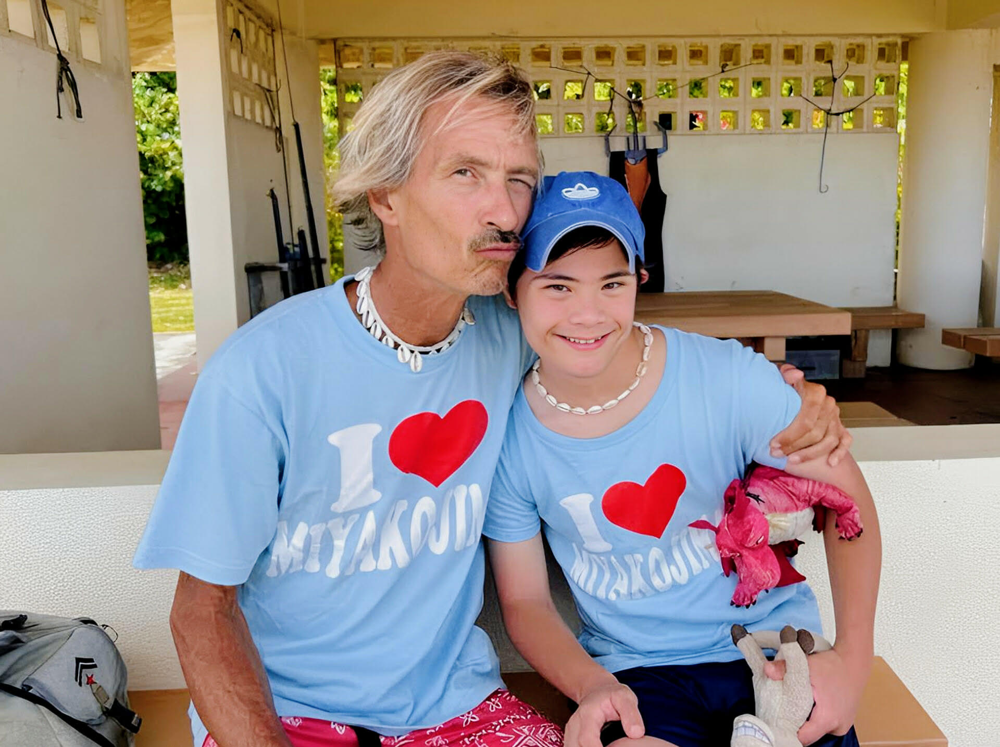

I LOVE MIYAKOJIMA • YABIJI SNORKELING
Patric Bodhisattvaパトリック・ボーディサットヴァさん
Patric is a licensed PADI instructor who has been guiding since 1994. Through I Love Miyakojima, he leads relaxed Yabiji snorkeling for travelers who want a slower, more personal ocean day instead of a crowded short tour.
パトリックさんは、1994年から活動しているPADIインストラクター。I Love Miyakojimaでは、短時間で急ぐツアーではなく、ゆったりと海を楽しみたい方へ向けた少人数制の八重干瀬シュノーケリングを案内しています。
Tours run once a day for 4.5 hours from Ikema Fishing Port, with lunch, drinks, four snorkeling sites, and an edited Insta360 video included. Contact I Love Miyakojima at 080-5188-8005.
ツアーは池間漁港発、1日1回の4.5時間。ランチ、ドリンク、4つのシュノーケリングポイント、編集済みInsta360動画が含まれます。I Love Miyakojimaへのお問い合わせは080-5188-8005まで。
Max 10 Guests最大10名まで
Ikema Departure池間漁港発
4 Snorkeling Sites4つのポイントへ
Year-Round Tours通年開催